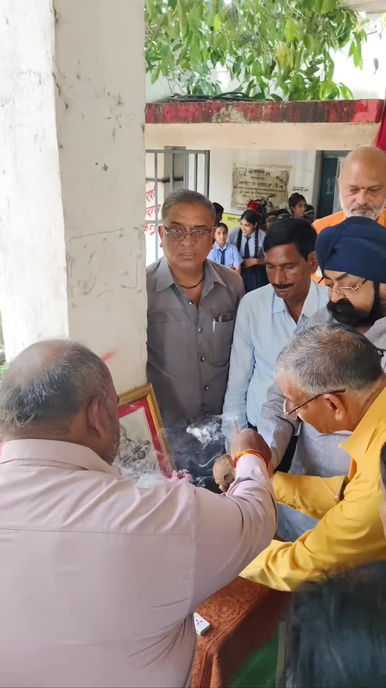
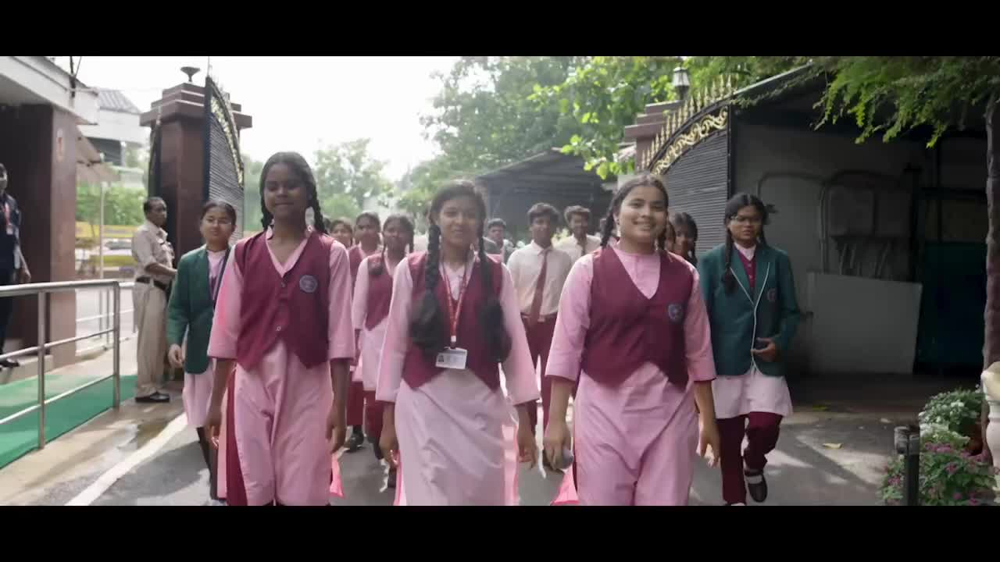
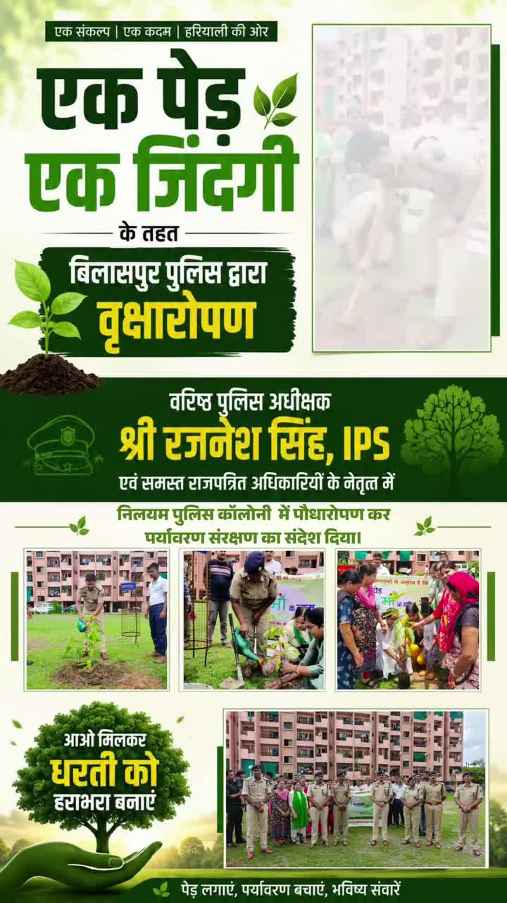
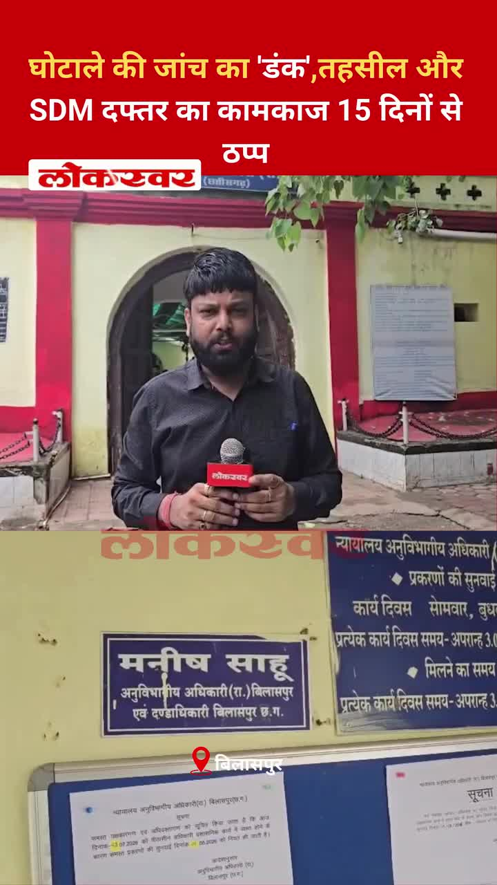
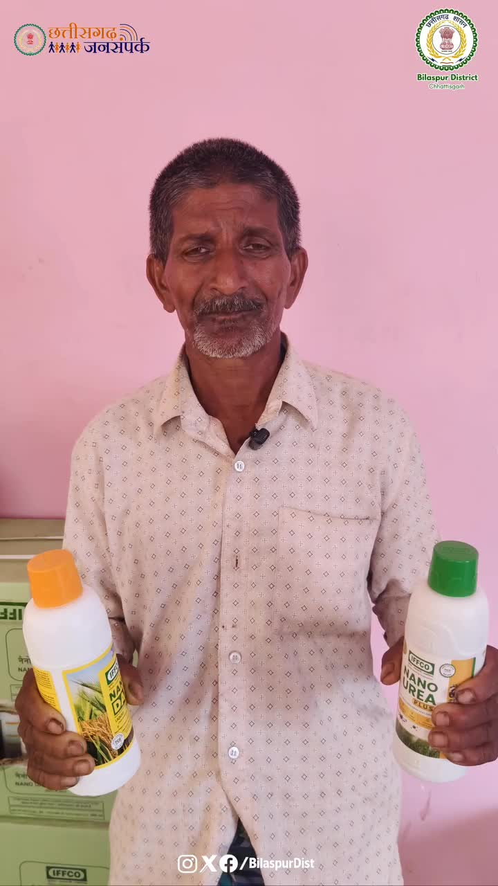
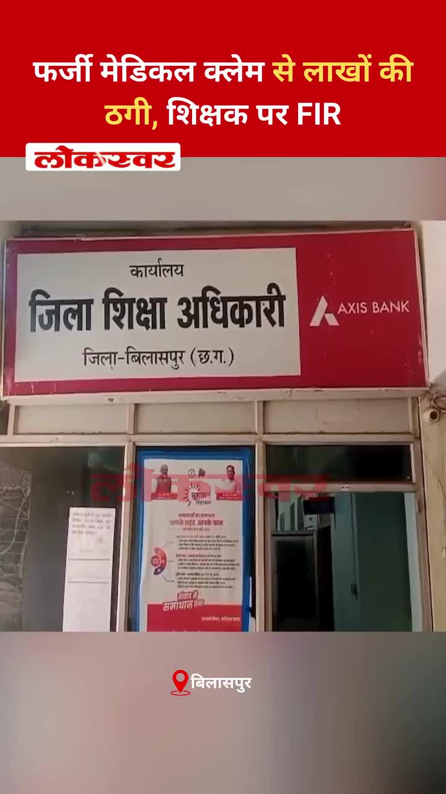
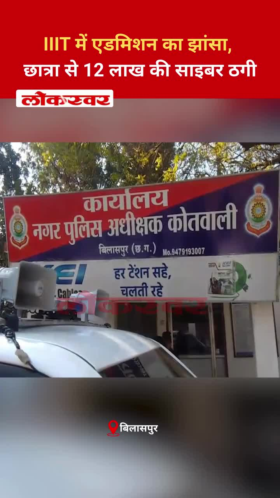

Bilaspur News Hub
2
BUSINESS
4
EDUCATION
8
EVENT
16
GOVERNMENT
7
HEALTH
3
INFRASTRUCTURE
25
INSTAGRAM NEWS
31
NEWS
1
OTHER
13
POLICE
1
RAILWAY
3
SOCIAL
8
YOUTUBE VIDEOS
BUSINESS2

The Hitavada · Scraped: 2026-08-01 08:00:25
MTDC is seeking land in the city for the Shiv Srushti project, aiming to boost tourism in Vidarbha. The initiative promises infrastructure upgrades and economic benefits.

The Hitavada · Scraped: 2026-07-31 08:36:34
State-owned GAIL and RCF have signed an MoU to develop a Rs 10,000 crore fertiliser project at Saoner. The initiative aims to boost domestic fertilizer production and reduce import dependence.
EDUCATION4

CG Wall · Published: Fri, 31 Ju | Scraped: 2026-07-31 16:01:38
दुर्गेश पांडेय, भाजपा शहर जिला मीडिया सहप्रभारी ने भ्रष्टाचार पर जीत के रूप में नई परीक्षा व्यवस्था का स्वागत किया। ये सुधार परीक्षा प्रणाली में निष्पक्षता और पारदर्शिता लाने का लक्ष्य रखते हैं।

Lokswar · Published: Fri, 31 Ju | Scraped: 2026-07-31 16:01:38
प्रद्युम्न तिवारी, डीआईईटी पेण्ड्रा के सहायक ग्रेड-03, को आपराधिक मामले में जेल जाने के बाद निलंबित कर दिया गया है। विभाग ने कानूनी मुद्दों में फंसे कर्मचारियों के प्रति सख्त रुख अपनाया है।

The Hitavada · Scraped: 2026-08-01 08:00:25
एम्स के डॉक्टरों ने दांत निकालने की प्रक्रिया को आसान बनाने के लिए एक स्वदेशी उपकरण विकसित किया है, जो दर्द, समय और जटिलताओं को कम करता है। यह चिकित्सा नवाचार में भारत की बढ़ती क्षमता को दर्शाता है।
District Administration Bilaspur · Published: 2026-07-31 | Scraped: 2026-07-31 13:35:48
District Administration Bilaspur released a list of eligible and ineligible candidates for the lateral entry entrance exam on 02-08-2026 for Classes 11 Arts/Commerce at Prayas Residential School for boys and girls. The list helps students know their admission status for the upcoming session.
EVENT8

The Hitavada · Scraped: 2026-08-01 08:00:25
The annual Kanwar Yatra began in the city, with devotees carrying holy water from the Ganges. The procession is expected to pass through major streets, drawing large crowds and traffic disruptions. Local authorities have arranged security and medical support.

Kalash with sacred soil from Varanasi reaches Raipur / वाराणसी से पवित्र मिट्टी का कलश रायपुर पहुँचा
The Hitavada · Scraped: 2026-08-01 08:00:25
A Kalash carrying sacred soil from Varanasi has arrived in Raipur for the upcoming religious ceremony. The soil will be used in rituals to invoke blessings and cultural heritage. The event has drawn attention from local devotees and authorities.
The Hitavada · Scraped: 2026-08-01 08:00:25
Suman has secured a spot in the HYROX World Championship, marking a major achievement in the sport. This qualification highlights her dedication and competitive performance.

The Hitavada · Scraped: 2026-08-01 08:00:25
An inter-department swimming event took place, featuring participants from various organizations. The competition showcased talent and promoted teamwork through aquatic sports. Officials praised the organization and enthusiastic participation.

The Hitavada · Scraped: 2026-08-01 08:00:25
The VCA will felicitate the victorious team of the Vijay Hazare tournament this Sunday. The ceremony recognizes the team's outstanding performance. Fans and officials are expected to attend.
The Hitavada · Scraped: 2026-08-01 08:00:25
Heavy rains turned the field into slush, forcing the match to be decided by shoot-outs only. The weather made normal play impossible, leading to a dramatic penalty shootout. Both teams displayed skill under adverse conditions.
The Hitavada · Scraped: 2026-07-31 08:36:34
Indian athlete Sreeshankar secured his second consecutive Commonwealth Games long jump medal, making history with back-to-back achievements.
The Hitavada · Scraped: 2026-07-31 08:36:34
Indian sprinters Gavit and Basil finished first and second respectively in the men's 100m T47 event, marking a historic double for the nation. Their performance highlights India's growing presence in para-athletics.
GOVERNMENT16

CG Wall · Published: Sat, 01 Au | Scraped: 2026-08-01 08:00:25
The Chhattisgarh High Court in Bilaspur has adopted a firm approach toward cases involving elected representatives, ensuring no leniency for MPs and MLAs. This move aims to expedite justice and hold public servants accountable.

Lokswar · Published: Fri, 31 Ju | Scraped: 2026-07-31 08:36:34
The Raipur government has prohibited the sale and use of analog paneer starting today. The move aims to ensure food safety and quality standards for consumers.
Lokswar · Published: Fri, 31 Ju | Scraped: 2026-07-31 13:35:48
Chief Minister Vishnu Deo Sings held talks with Prime Minister Narendra Modi in New Delhi, focusing on Bastar’s development agenda and upcoming projects. The meeting aimed to align state and central plans for regional growth.

Nai Dunia Bilaspur · Published: Fri, 31 Ju | Scraped: 2026-07-31 16:01:38
छत्तीसगढ़ हाई कोर्ट ने फैसला सुनाया कि जब तक विवाह की वैधता पर मामला विचाराधीन है, तब तक पत्नी को भरण-पोषण से वंचित नहीं किया जा सकता है। यह निर्णय कानूनी प्रक्रिया के दौरान पत्नी की वित्तीय सुरक्षा सुनिश्चित करता है।

CG Wall · Published: Fri, 31 Ju | Scraped: 2026-07-31 17:25:00
A defect was discovered in the Atal Bihari Vajpayee statue at Katghora’s Atal Complex, prompting the immediate suspension of a sub-engineer. Authorities have launched an inquiry to determine the cause of the flaw.

The Hitavada · Scraped: 2026-08-01 08:00:25
Prime Minister Narendra Modi spoke with UK Prime Minister Burnham, discussing bilateral ties and regional issues. The conversation underscored cooperation on climate, trade, and security matters.

The Hitavada · Scraped: 2026-08-01 08:00:25
Governor Jishnu Dev Varma visited the city today, meeting officials and reviewing development projects. The visit highlighted focus on regional growth and governance.

The Hitavada · Scraped: 2026-08-01 08:00:25
The Chief Minister will inaugurate development projects exceeding Rs 400 crore, focusing on roads, schools, and health facilities. The projects aim to boost local infrastructure and employment. Residents are hopeful for improved services.
The Hitavada · Scraped: 2026-08-01 08:00:25
The Congress party will begin a statewide agitation against recent electricity tariff hikes and the installation of smart meters. The protest aims to pressure the government for affordable rates and transparency. Leaders have called for public participation and planned meetings across districts.
The Hitavada · Scraped: 2026-08-01 08:00:25
The BJP claimed that the Chhattisgarh government has revamped its administrative system over the past two years. The party highlighted improvements in governance, infrastructure, and public services. Opposition parties have mixed reactions to the statement.
The Hitavada · Scraped: 2026-08-01 08:00:25
मुख्यमंत्री ने प्रधानमंत्री मोदी के समक्ष बस्तर के विकास का खाका प्रस्तुत किया, जिसमें बुनियादी ढाँचे, शिक्षा और स्वास्थ्य सेवाओं को बढ़ावा देने के लिए प्रमुख पहल शामिल हैं। यह योजना क्षेत्र के सामाजिक-आर्थिक परिदृश्य को बदलने की दिशा में एक महत्वपूर्ण कदम है।
The Hitavada · Scraped: 2026-07-31 08:36:34
The Supreme Court ruled that pellet guns cannot be banned, allowing security forces to continue using them. The decision addresses ongoing debates about their impact in conflict zones.
The Hitavada · Scraped: 2026-07-31 08:36:34
Parliament approved the Anti-PaperLeak Bill after the Opposition staged a walkout. The legislation aims to curb unauthorized document leaks.
The Hitavada · Scraped: 2026-07-31 08:36:34
The Prevention of Insults to National Honour (Amendment) Bill, 2026 makes insulting Vande Mataram a punishable offence. It also reinforces penalties for other national honour violations.
The Hitavada · Scraped: 2026-07-31 08:36:34
Prime Minister Narendra Modi convened a high-level Cabinet meeting to discuss current geo-political developments and India's strategic responses. The session focused on diplomatic priorities and national security considerations.
BREAKINGDATIA records 71% voter turnout in Assembly bypoll / दतिया में विधानसभा उपचुनाव में 71% मतदान
The Hitavada · Scraped: 2026-07-31 08:36:34
The Assembly bypoll in Datia saw a voter turnout of 71%, indicating strong public participation. The results are awaited as the contest remains closely watched. The high turnout reflects the electorate's engagement in the regional political process.
HEALTH7

CG Wall · Published: Fri, 31 Ju | Scraped: 2026-07-31 13:35:48
The health department issued a stern warning, serving a notice to the BMO for negligence after a recent private hospital controversy. Authorities ordered village‑wise monitoring to ensure patient safety and accountability.

Lokswar · Published: Fri, 31 Ju | Scraped: 2026-07-31 13:35:48
A two‑day oral health camp organized by New Horizon Dental College at St. Vincent Pallotti School screened 1,049 children, providing early dental care assessments.
Lokswar · Published: Fri, 31 Ju | Scraped: 2026-07-31 13:35:48
Collector Sanjay Agarwal conducted a surprise inspection of the district hospital, targeting doctors missing duty. The action aims to improve attendance and patient care standards.
CG Wall · Published: Fri, 31 Ju | Scraped: 2026-07-31 16:01:38
जिले के कलेक्टर ने निजी अस्पताल में मरीजों को बंधक बनाए जाने के बाद स्वास्थ्य सुविधाओं का निरीक्षण किया और लापरवाही के खिलाफ चेतावनी दी। उन्होंने सेवाओं को अधिक संवेदनशील और जवाबदेह बनाने पर जोर दिया।

Lokswar · Published: Fri, 31 Ju | Scraped: 2026-07-31 17:25:00
The collector has ordered a strict investigation into alleged irregularities surrounding the construction of the modular eye operation theatre at Bilaspur District Hospital, focusing on quality, payments, and commission. The probe aims to ensure transparency and proper fund usage.
The Hitavada · Scraped: 2026-08-01 08:00:25
अस्पतालों में वायरल बुखार और श्वसन रोगियों में 20-30% की वृद्धि दर्ज की गई है, जो संभवतः मौसमी परिवर्तन के कारण स्वास्थ्य संबंधी चिंताओं को बढ़ा रही है। अधिकारियों से चिकित्सा सुविधाओं और जन जागरूकता को बढ़ाने का आग्रह किया जा रहा है।

G News Bilaspur · Published: 2026-07-31 | Scraped: 2026-07-31 16:01:38
The collector visited the district hospital to assess health infrastructure and services, ensuring proper patient care and resource availability.
INFRASTRUCTURE3

Lokswar · Published: Fri, 31 Ju | Scraped: 2026-07-31 16:01:38
Chief Minister Vishnu Deo Sai has requested central approval for 2,305 new mobile towers to strengthen digital connectivity in remote Chhattisgarh regions. The plan will improve digital identity and communication infrastructure for underserved areas.

The Hitavada · Scraped: 2026-08-01 08:00:25
A building collapsed in Bhiwandi, resulting in ten fatalities and raising concerns over construction safety. Authorities have launched an investigation and begun rescue operations for survivors.

G News Bilaspur · Published: 2026-07-31 | Scraped: 2026-07-31 13:35:48
A severe road accident occurred near Kannan Pendari, resulting in multiple casualties. Authorities have launched an investigation and urged caution on the roads.
INSTAGRAM NEWS25


An Instagram post from Bilaspur Diaries highlights a quirky village attendance board placed in an unexpected spot, drawing attention to local governance practices. The image has resonated with viewers, showcasing rural administrative details in a humorous way.


The post showcases vibrant monsoon landscapes across Chhattisgarh, featuring lush greenery, flowing rivers, and traditional life amid rains. It highlights the state's natural beauty during the rainy season, attracting appreciation from followers.


The poster recounts traveling from Bilaspur to Raipur solely to visit a showroom, only to find the experience far below expectations. The long journey and the poor quality of the display left them disappointed, prompting a rethink of such trips.


A key review meeting in Delhi discussed accelerating Chhattisgarh’s rail projects, aiming for faster connectivity. The outcome is expected to boost regional development and reduce travel time.


भीषण सड़क हादसा, रेलिंग का सरिया दो युवकों के पेट में घुसा, गंभीर रूप से घायल #BilaspurNews #SakriPolice #RoadAccident #KananPendari #SimsHospital #Dial112 #SpeedControl #ChhattisgarhNews by @lokswar.in


किराना दुकान के विवाद में किसान की ह*त्या... डंडों से पीट-पीटकर उतारा मौ*त के घाट, दो आ*रोपी हिरासत में #KotaPolice #MurderCase #CrimeNews #BilaspurNews #KhurdurVillage #DisputeArrest #ChhattisgarhPolice #LawAndOrder by @lokswar.in

भारत स्काउट्स एवं गाइड्स, जिला संघ बिलासपुर द्वारा आयोजित वृहद वृक्षारोपण एवं साइकिल वितरण कार्यक्रम में बिल्हा विधायक श्री धरमलाल कौशिक शामिल हुए। इस अवसर पर पौधरोपण कर पर्यावरण संरक्षण का संदेश दिया गया तथा छात्राओं को साइकिलें वितरित की गईं। आइए, अधिक से अधिक पौधे लगाकर उनके संरक्षण का संकल्प लें। 🌱🚴#EkPedMaaKeNaam #Vriksharopan #BharatScoutsAndGuides #Bilaspur #Chhattisgarh by @bilaspurdist

'एकलव्य संवाद' के अंतर्गत प्रदेश के एकलव्य आदर्श आवासीय विद्यालयों के नीट-2026 में सफल बच्चों से बातचीत के दौरान छत्तीसगढ़ के उज्ज्वल भविष्य की सुंदर झलक दिखाई दी।अपनी प्रतिभा, मेहनत और दृढ़ संकल्प के बल पर इन बच्चों ने जो सफलता अर्जित की है, वह वास्तव में प्रेरणादायी है। इन विद्यार्थियों की सफलता इस विश्वास को और मजबूत करती है कि विकसित छत्तीसगढ़ का भविष्य ज्ञान, प्रतिभा, नवाचार और अवसरों की समानता पर आधारित होगा।सभी सफल विद्यार्थियों को उज्ज्वल भविष्य के लिए हार्दिक शुभकामनाएँ। आप सभी निरंतर नई सफलताएँ अर्जित करें और अपनी प्रतिभा से प्रदेश एवं देश का नाम रोशन करें। by @bilaspurdist
🎓 नए सत्र हेतु प्रवेश प्रारंभ! 🔥शासकीय आश्रयदत्त कर्मशाला, तिफरा (बिलासपुर)दिव्यांगजनों को कौशल, सम्मान एवं आत्मनिर्भरता से जोड़ने की दिशा में एक सशक्त पहल।छत्तीसगढ़ की एकमात्र शासकीय आवासीय संस्था, जहाँ दिव्यांगजनों को विभिन्न व्यवसायिक ट्रेडों में निःशुल्क कौशल प्रशिक्षण प्रदान कर स्वरोजगार एवं रोजगार के लिए सक्षम बनाया जाता है।✨ विशेष सुविधाएँ✅ निःशुल्क कौशल प्रशिक्षण✅ निःशुल्क भोजन एवं आवासीय सुविधा✅ स्वरोजगार एवं रोजगारोन्मुख प्रशिक्षण📞 अधिक जानकारी एवं प्रवेश हेतु संपर्क करें:☎️ 9826565784☎️ 9907445392आइए, कौशल विकास के माध्यम से आत्मनिर्भर भविष्य की ओर एक मजबूत कदम बढ़ाएँ।#SamajKalyanCG #SkillDevelopment #DivyangSashaktikaran #Bilaspur #AshrayDuttKarmshala #NewSession #AdmissionOpen #AtmanirbharBharat by @bilaspurdist

" एक पेड़ एक जिंदगी" महाअभियान के तहत SSP रजनेश सिंह IPS एवं समस्त राजपत्रित अधिकारियों के नेतृत्व में निलयम पुलिस कॉलोनी बिलासपुर में पौधारोपण कर पर्यावरण संरक्षण का संदेश दिया.🌱 by @bilaspurdist
रायपुर में ट्रैफिक पुलिस की कार्रवाई पर सवाल... क्या नियम सिर्फ दोपहिया चालकों के लिए?राजधानी रायपुर में पुलिस कमिश्नरेट लागू होने के बाद बिना हेलमेट दोपहिया वाहन चालकों के खिलाफ ई-चालान की कार्रवाई लगातार जारी है। लेकिन अब ट्रैफिक पुलिस की कार्यशैली पर सवाल उठने लगे हैं। सोशल मीडिया पर ऐसे कई वीडियो सामने आए हैं, जिनमें कुछ चारपहिया वाहन काली फिल्म, हूटर और सायरन का इस्तेमाल करते नजर आ रहे हैं। सवाल यह है कि क्या यातायात नियमों का पालन केवल दोपहिया चालकों से ही कराया जाएगा, या फिर नियमों का उल्लंघन करने वाले चारपहिया वाहनों पर भी सख्त कार्रवाई होगी। हालांकि, इस मुद्दे पर पुलिस की ओर से अभी तक कोई आधिकारिक बयान सामने नहीं आया है। #crimenews #RaipurTrafficPolice #EChallanRaipur #TrafficRulesDiscrimination #TintedGlassViolation #HooterSirenBan #RaipurPoliceCommissionerate #PublicGrievance #ChhattisgarhNews @cpraipurpolice by @lokswar.in
बारिश का कहर, उदंती नदी पर बन रहा निर्माणाधीन पुल ढहागरियाबंद जिले में लगातार हो रही भारी बारिश के बीच उदंती नदी पर निर्माणाधीन पुल भरभराकर गिर गया। यह पुल करीब 9 करोड़ रुपये की लागत से बनाया जा रहा था और देवभोग विकासखंड के अमलीगांव को ओडिशा के चार गांवों से जोड़ने वाला था। बताया जा रहा है कि पिछले 50 घंटे से लगातार हो रही बारिश के दौरान पुल का हिस्सा ढह गया। राहत की बात यह रही कि हादसे में किसी जनहानि की सूचना नहीं है। पुल का निर्माण ओडिशा सरकार द्वारा कराया जा रहा था। घटना के बाद निर्माण की गुणवत्ता और सुरक्षा मानकों को लेकर सवाल खड़े हो गए हैं, जबकि संबंधित विभाग मामले की जांच में जुट गया है। #GariabandNews #UdantiRiver #BridgeCollapse #MonsoonHavoc #Devbhog #OdishaGovernment #ConstructionQuality #ChhattisgarhNews by @lokswar.in

The SDM office in Bilaspur has been non‑functional for the past 15 days as authorities investigate a major scam. The shutdown has disrupted land records and other services, affecting residents and businesses.
The Chhattisgarh health minister announced a complete ban on analog cheese citing health risks. The move aims to protect consumers from unsafe food products. Enforcement details are awaited.
The Jhojha Waterfall has become a point of debate as tourists face confusion about access while local efforts aim to improve facilities. Authorities are working to clear pathways and provide information to boost safe tourism.

Farmer Ramprasa in Saida village adopts cutting‑edge farming techniques to increase yields and income. His methods include drip irrigation, organic compost and high‑value crops, serving as a model for local agriculture.
राजिम त्रिवेणी संगम में बढ़ा जलस्तर, कुलेश्वर धाम शिव मंदिर तक पहुंचा पानीराजिम में लगातार हो रही बारिश के चलते त्रिवेणी संगम का जलस्तर तेजी से बढ़ गया है। तीनों नदियों का पानी प्रसिद्ध कुलेश्वर धाम शिव मंदिर तक पहुंच गया है। बताया जा रहा है कि करीब 30 फुट ऊंचाई पर स्थित मंदिर परिसर तक जलभराव हो गया है।बढ़ते जलस्तर के कारण कुलेश्वर धाम मंदिर का निचला हिस्सा पूरी तरह पानी से घिर गया है। श्रद्धालुओं की आवाजाही प्रभावित हुई है, वहीं प्रशासन लगातार हालात पर नजर बनाए हुए है।प्रशासन ने लोगों से नदी किनारे जाने से बचने और सतर्क रहने की अपील की है। लगातार बारिश के चलते महानदी, पैरी और सोंढूर नदियों का जलस्तर बढ़ रहा है और आने वाले समय में स्थिति पर विशेष निगरानी रखी जा रही है। #Rajim #TriveniSangam #KuleshwarDham #Mahanadi #MonsoonUpdate #FloodAlert #ChhattisgarhTourism #PublicSafetyAlert by @lokswar.in
Villagers expressed anger over the coal depot's operations, warning of a massive protest if their concerns are not addressed promptly.

A teacher faces an FIR after allegedly defrauding the education department through fake medical claims, causing financial loss of lakhs.

A student was scammed of 12 lakhs after being promised IIIT admission; cyber authorities are investigating the fraud case.
NEWS31

Lokswar · Published: Sat, 01 Au | Scraped: 2026-08-01 08:00:25
<p>रायगढ़ जिले के खरसिया क्षेत्र के भूपदेवपुर थाना अंतर्गत झीटीपाली गांव में देर रात सड़क किनारे खड़े दो ट्रेलरों में अचानक भीषण आग लग गई। आग इतनी तेज थी कि दोनों ट्रेलरों के केबिन पूरी तरह जलकर राख हो गए। सुबह ग्रामीणों की नजर पड़ी तो घटना का खुलासा हुआ। हादसे में लाखों रुपये के …</p>
<p>The

Lokswar · Published: Sat, 01 Au | Scraped: 2026-08-01 08:00:25
<p>बेमेतरा पुलिस ने करीब 14 करोड़ 56 लाख रुपये के बैंक घोटाले का पर्दाफाश करते हुए इंडियन ओवरसीज बैंक के पूर्व शाखा प्रबंधक विनीत दास को तमिलनाडु के तंजावुर से गिरफ्तार किया है। आरोपी पर बैंक के नियमों का उल्लंघन कर फर्जी ऋण स्वीकृत करने, खातों में अनधिकृत लेनदेन करने और बैंक को करोड़ों रुपये …
Lokswar · Published: Sat, 01 Au | Scraped: 2026-08-01 08:00:25
<p>(राम प्रसाद गुप्ता) : नागपुर/एमसीबी। सड़क दुर्घटनाओं पर प्रभावी अंकुश लगाने और युवाओं में यातायात नियमों के प्रति जागरूकता बढ़ाने के उद्देश्य से पुलिस सहायता केंद्र नागपुर द्वारा हाईस्कूल बरबसपुर में विशेष सड़क सुरक्षा और यातायात जागरूकता कार्यक्रम आयोजित किया गया। यह अभियान पुलिस अधीक्षक एमसीबी

Nai Dunia Bilaspur · Published: Fri, 31 Ju | Scraped: 2026-07-31 08:36:34
<img src="https://img.naidunia.com/naidunia/ndnimg/31072026/31_07_2026-obscene_cd_scandal.jpg" />Obscene CD scandal: पूर्व मुख्यमंत्री भूपेश बघेल को हाई कोर्ट से एक महत्वपूर्ण राहत मिली है। हाई कोर्ट ने रायपुर स्थित सीबीआई की विशेष अदालत में चल रही ट्रायल कोर्ट की कार्यवाही पर अंतरिम रोक लगा दी है।

Lokswar · Published: Fri, 31 Ju | Scraped: 2026-07-31 08:36:34
<p>बीजापुर में लगातार हो रही भारी बारिश के बीच जिला प्रशासन ने त्वरित राहत एवं बचाव अभियान चलाकर गर्भवती महिला, नवजात शिशु और सात पर्यटकों को सुरक्षित बाहर निकाला। मुख्यमंत्री विष्णुदेव साय और प्रभारी मंत्री केदार कश्यप के निर्देश पर प्रशासन की टीमें लगातार राहत कार्य में जुटी हुई हैं।   लगातार

Lokswar · Published: Fri, 31 Ju | Scraped: 2026-07-31 08:36:34
<p>राजधानी रायपुर में अपराधियों और संदिग्ध गतिविधियों पर लगाम लगाने के लिए पुलिस ने तड़के बड़ा सत्यापन अभियान चलाया। बीएसयूपी कॉलोनियों और देवार डेरा में हुई इस कार्रवाई के दौरान 350 से अधिक मकानों की जांच की गई, जिसमें 80 से ज्यादा पुलिस अधिकारी और जवान शामिल रहे। अभियान के दौरान 8 संदिग्ध मिले, जि

Nai Dunia Bilaspur · Published: Fri, 31 Ju | Scraped: 2026-07-31 11:59:25
<img src="https://img.naidunia.com/naidunia/ndnimg/31072026/31_07_2026-cg_high_court_dowry.jpg" />छत्तीसगढ़ हाई कोर्ट ने नीट-यूजी-2026 की ओएमआर शीट में हेरफेर और कम अंक दिए जाने का आरोप लगाने वाले छात्र को राहत देने से इनकार कर दिया है।
Lokswar · Published: Fri, 31 Ju | Scraped: 2026-07-31 19:14:03
Terrorists opened fire in Jammu and Kashmir's Kulgam district on Friday, resulting in the death of a non-local laborer from Chhattisgarh. The incident has sparked condemnation and heightened security concerns in the region.
The Hitavada · Scraped: 2026-08-01 08:00:25
The Hitavada · Scraped: 2026-08-01 08:00:25
The Hitavada · Scraped: 2026-08-01 08:00:25
The Hitavada · Scraped: 2026-08-01 08:00:25
The Hitavada · Scraped: 2026-08-01 08:00:25
The Hitavada · Scraped: 2026-08-01 08:00:25
विदर्भ के निम्न दबाव के कारण मध्य प्रदेश में भारी बारिश हुई है, जिसमें गोगावां में 190 मिमी बारिश दर्ज की गई है। आज भी बिखरी हुई से अलग-अलग बारिश की संभावना है, जिससे यात्रा और कृषि पर प्रभाव पड़ सकता है। यह मौसम प्रणाली क्षेत्र के जलवायु परिदृश्य को प्रभावित कर रही है।
The Hitavada · Scraped: 2026-07-31 11:59:25
The Hitavada · Scraped: 2026-07-31 11:59:25
The Hitavada · Scraped: 2026-07-31 11:59:25
The Hitavada · Scraped: 2026-07-31 11:59:25
The Hitavada · Scraped: 2026-07-31 11:59:25
The Hitavada · Scraped: 2026-07-31 11:59:25
OTHER1
The Hitavada · Scraped: 2026-08-01 08:00:25
A discarded SpaceX rocket, traveling at 8,700 kph, is set to impact the Moon on August 5. The event draws attention to space debris and its potential risks to lunar missions.
POLICE13

Lokswar · Published: Fri, 31 Ju | Scraped: 2026-07-31 08:36:34
A speeding car on Raipur Expressway Friday dragged a biker for 100 meters, causing fatal injuries. The incident highlights dangerous driving and calls for stricter traffic enforcement.

Lokswar · Published: Fri, 31 Ju | Scraped: 2026-07-31 08:36:34
Hyderabad cyber crime police registered a case over an alleged morphed and objectionable video of PM Narendra Modi. The complaint names several accounts, including Meta India’s head, for spreading the fake footage.
Lokswar · Published: Fri, 31 Ju | Scraped: 2026-07-31 13:35:48
Rishirh police raided a human trafficking ring following complaints, detaining eight individuals. The operation highlights ongoing efforts to combat illegal sex trade in the region.

CG Wall · Published: Fri, 31 Ju | Scraped: 2026-07-31 16:01:38
सिरगिट्टी में पुलिस ने नशाखोरों, अड्डेबाजों और फरार वारंटी समेत 11 लोगों को गिरफ्तार किया। यह अभियान क्षेत्र में कानून व्यवस्था को बहाल करने के लिए चलाया गया है।
The Hitavada · Scraped: 2026-08-01 08:00:25
The families of Delhi police officers injured during a CJP protest are urging Parliament to address their plight and ensure justice. They highlight the sacrifices made by uniform bearers and call for government support.
The Hitavada · Scraped: 2026-08-01 08:00:25
A former AAP councillor, Tahir, and four accomplices received life sentences for murdering an IB officer. The case underscores the gravity of targeting security personnel and reinforces judicial deterrence.

The Hitavada · Scraped: 2026-08-01 08:00:25
CBDT is scanning city taxpayers for filing bogus ITRs, targeting tax fraud. The crackdown aims to ensure compliance and curb illegal claims.
BREAKINGCops nab couple in illegal liquor trade / पुलिस ने अवैध शराब कारोबार में जोड़े को गिरफ्तार किया
The Hitavada · Scraped: 2026-08-01 08:00:25
Police arrested a couple involved in illegal liquor trade, seizing contraband. The operation reflects efforts to curb illicit alcohol sales.
The Hitavada · Scraped: 2026-07-31 08:36:34
Enforcement Directorate raided multiple locations linked to the 2022 Coimbatore car bomb blast, suspected to be inspired by ISIS. The operation seeks to uncover financing and logistics networks.
The Hitavada · Scraped: 2026-07-31 08:36:34
Opposition MPs staged a protest against police action taken on students and claimed that donations meant for the Ram Temple were stolen. The demonstration highlights tensions between the government and opposition over law enforcement and temple funds.
The Hitavada · Scraped: 2026-07-31 08:36:34
The Enforcement Directorate and RPZO detained K K Srivastava over a Rs 15 crore scam involving fake Smart City projects. The alleged fraud misled investors and authorities, prompting a crackdown. Authorities are investigating the network behind the fraudulent scheme.
The Hitavada · Scraped: 2026-07-31 08:36:34
Authorities began a rescue operation in Arang and Abhanpur after floodwaters inundated villages. Teams are using boats and helicopters to evacuate stranded residents. The situation remains critical as water levels continue to rise.
The Hitavada · Scraped: 2026-07-31 08:36:34
Floodwaters in Narayanpur forced the evacuation of 16 villagers, who were rescued by local authorities. The rescue team used boats to reach the affected households. Residents are being provided shelter and essential supplies.
RAILWAY1

Nai Dunia Bilaspur · Published: Sat, 01 Au | Scraped: 2026-08-01 05:28:45
The long-awaited Katghora‑Dongargarh rail line in Chhattisgarh has finally received government approval, ending a 16‑year struggle. Once completed, the line will improve connectivity and boost regional development. The decision marks a significant victory for local commuters and businesses.
SOCIAL3
Protesters rally against MPMSU bifurcation / कई संगठनों ने एमपीएमएसयू के विभाजन के खिलाफ सड़क पर उतरे
The Hitavada · Scraped: 2026-08-01 08:00:25
Various organizations protested the bifurcation of MPMSU, calling it detrimental to students. The demonstration highlighted concerns over administrative changes.
BREAKINGGas victims claim 70% water samples contaminated, BMC denies / गैस पीड़ितों ने 70% पानी के नमूनों में fecal संदूषण का आरोप लगाया, बीएमसी ने खारिज किया
The Hitavada · Scraped: 2026-08-01 08:00:25
गैस प्रभावित निवासियों ने दावा किया कि 70% पानी के नमूनों में fecal संदूषण पाया गया है, जिससे स्वास्थ्य संबंधी चिंताएँ बढ़ गई हैं। बीएमसी ने इन निष्कर्षों को अविश्वसनीय और अनुचित पद्धति बताते हुए खारिज कर दिया है, जिससे क्षेत्र में पानी की सुरक्षा को लेकर चिंताएँ बनी हुई हैं।

Villagers protest coal depot's arbitrary actions, farmers take to streets / कोल डिपो की मनमानी के खिलाफ ग्रामीणों का गुस्सा, किसान सड़क पर उतरे
G News Bilaspur · Published: 2026-07-31 | Scraped: 2026-07-31 13:35:48
Angered by the coal depot's unchecked practices, villagers and farmers staged a street protest demanding accountability. The demonstration highlights local concerns over environmental and economic impacts.
YOUTUBE VIDEOS8


GRAND NEWS BILASPUR: FINAL NEWS 01.08.2026 MORNING @News18MPChhattisgarh @IBC24InNews @ZeeNews ...


Bilaspur traffic police have initiated a special drive to improve road safety and curb violations. The campaign focuses on checking speed, helmets, and illegal parking across the city.
The OBC Mahasabha has presented several key demands to the Chhattisgarh government, urging greater representation and welfare measures. The announcement comes amid ongoing discussions on social justice and equity.


This is an evening final news update from Grand News Bilaspur dated July 31, 2026. It provides the latest local news and updates.


Angry villagers claim that the coal depot operators are exploiting patients for profit, endangering lives. The protest highlights alleged malpractice in essential supply during medical emergencies.


Reports indicate that underprivileged patients are being exploited to generate commissions, raising concerns about unethical medical practices. Authorities are urged to intervene and protect vulnerable patients.


Allegations of negligence at the Moppka animal shelter have raised concerns over animal welfare. An investigation is expected to address the reported lapses and ensure proper care.


Officials visited the hospital and spoke directly with patients to evaluate the quality of healthcare services. Their feedback will help identify shortcomings and improve the overall patient experience.